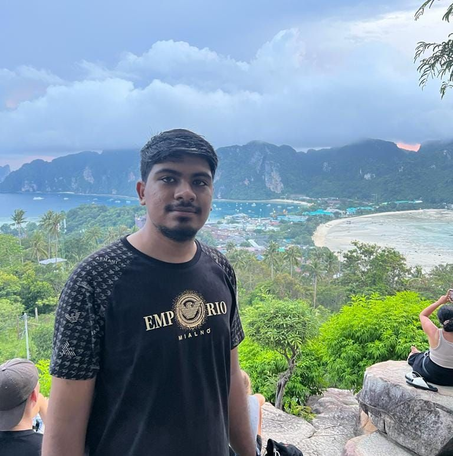

Home
About Me
I am currently doing my undergraduate on CSE in Independant University Bangladesh. I have a keen understanding of technology and is passionate about programming and web development. I see myself becoming a renouned software developer in the future.

Fun Fact About Me
I was on my way to Mirpur 10 protest riot on August 4th when I saw a bike rally of at least 100 chatro league members with guns and melee weapons coming my way! I took shelter in a shop I knew while they took over Mirpur 10 circle. One of my friends called me and told me to go to Mirpur 6 to meet with the group however, I had to cross the main road. After an hour I saw the army came through clearing the road when I rushed along with the army to the other side.